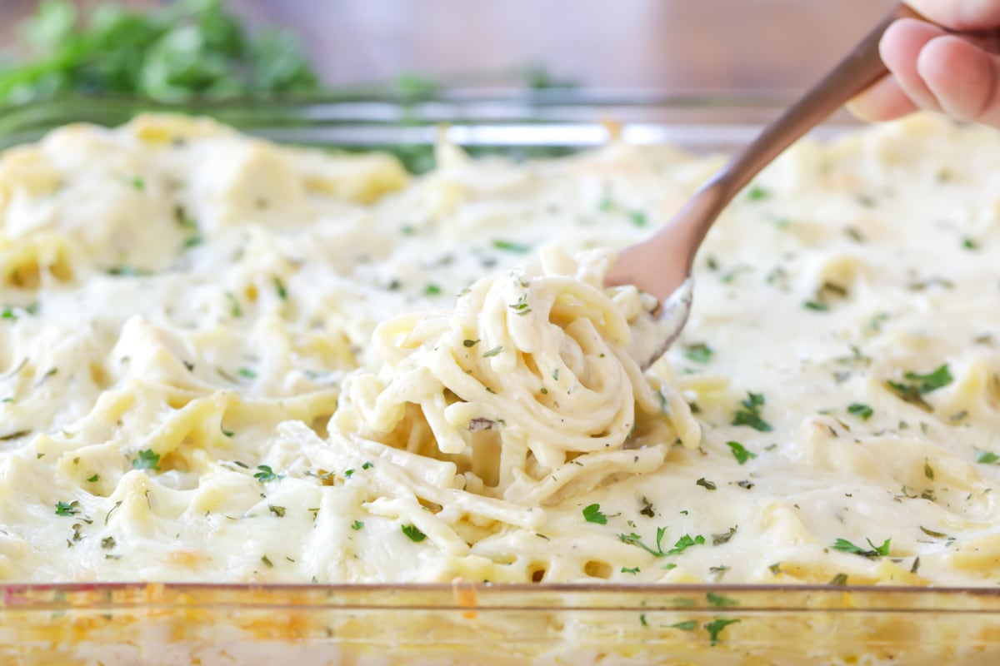

Easy Creamy Chicken Tetrazzini! :D

A yummy dish that few people have ever heard about save for an obscure episode of Maury that seems to have been forgotten about. "Chicken Tetrazzini" was an often used inside joke between my friend Ty, who showed me the episode, and I and usually left people confused because "What's Chicken Tetrazzini?"
Fast forward an eternity and I've finally eaten Chicken Tetrazzini. This is an easy peasy recipe for a seriously underrated pasta dish. This dish is sure to win over a few hearts! ;D
Ingredients
- 16 ounces of linguini (cooked)
- 1/2 cup unsalted butter (softened)
- 4 chicken breasts (cooked and diced)
- 2 cans cream of chicken soup
- 2 cups sour cream
- 1 teaspoon garlic salt with parsley flakes
- 1/2 teaspoon pepper
- 1 cup chicken broth
- 2 tablespoons parmesan cheese (grated)
- 2 cups mozzarella cheese (shredded)
Directions
- Preheat the oven to 350 degrees F. Grease a 9-inch x 13-inch baking dish and set aside.
- Cook noodles, to al dente, according to the box instructions. Drain and set aside.
- Meanwhile, in a large bowl, combine chicken, soup, sour cream, butter, chicken broth, galic salt and pepper. Mix well, then stir in cooked noodles.
- Pour into prepared baking dish. Sprinkle both cheese on top and bake, uncovered, for 36-42 minutes, until cheeses are melted and bubbling.